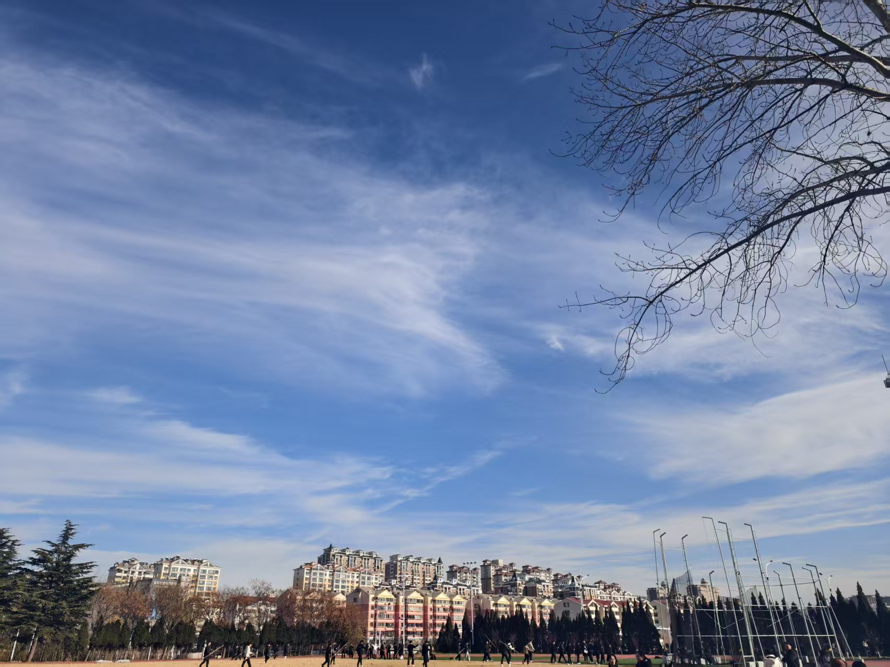
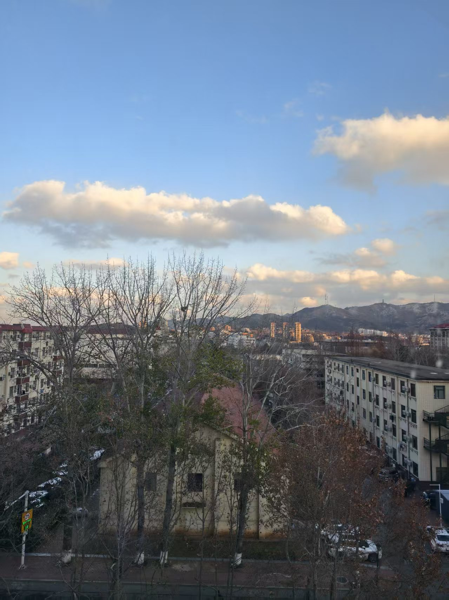
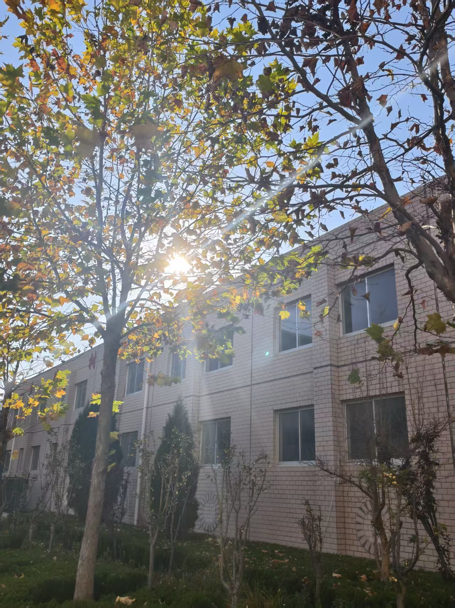
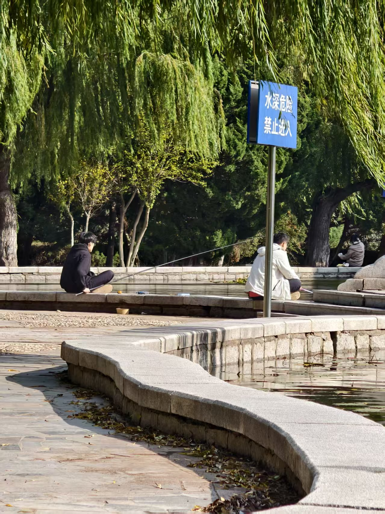
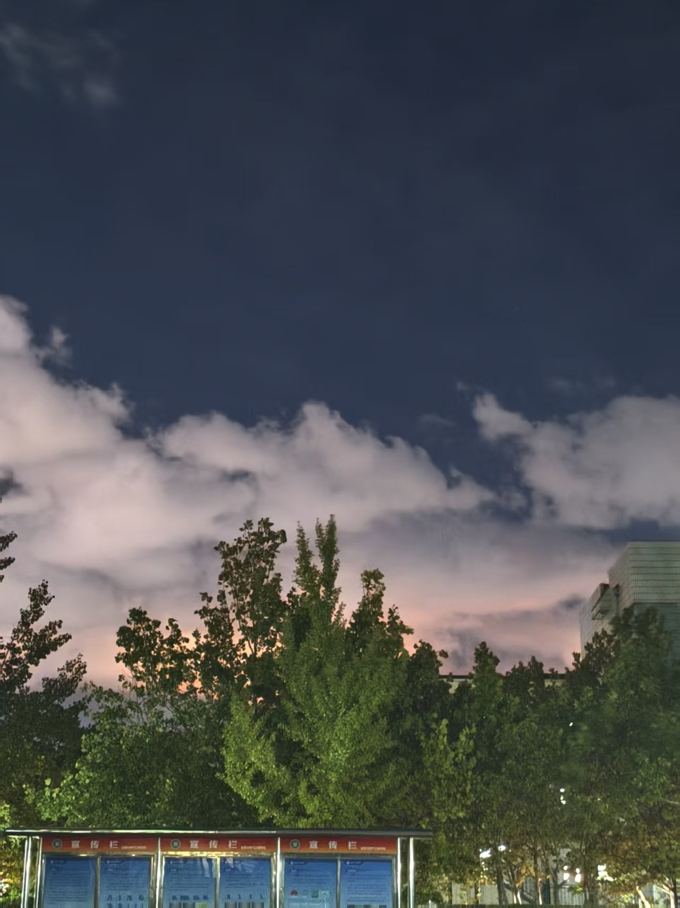
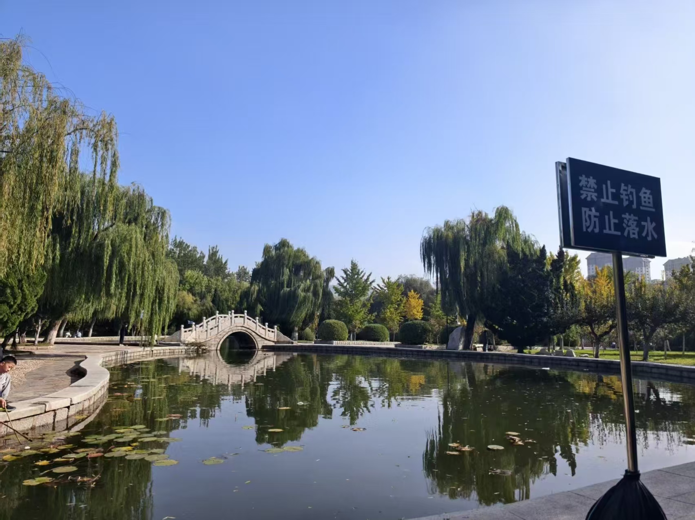

春风拂过校园的每一个角落，褪去了冬日的萧瑟，将生机与暖意铺满小径、湖畔与草坪。清晨的薄雾还未散尽，教学楼前的玉兰花已悄然绽放，洁白的花瓣缀满枝头，风一吹便簌簌飘落，铺成一条温柔的花径，空气中弥漫着淡淡的清香。
湖边的垂柳抽出嫩绿的枝条，细长的柳条垂入水中，随着涟漪轻轻摇曳，与水中嬉戏的鱼儿相映成趣。草坪上，新生的绿草探出脑袋，带着晶莹的露珠，踩上去柔软而湿润。不远处的樱花园里，粉白的樱花如云似霞，一簇簇缀满枝头，吸引着同学们驻足观赏，微风拂过，樱花雨洒落，氛围感十足。
午后的阳光格外温暖，透过树叶的缝隙洒下斑驳的光影，落在长椅上、石板路上，暖意融融。偶尔有鸟儿在枝头叽叽喳喳地鸣叫，增添了几分灵动。湖边的迎春花早已绽放，金黄的花朵簇拥在一起，像是在诉说着春日的喜悦。漫步校园，目之所及皆是生机，春风拂面，花香萦绕，让人忘却了疲惫，沉醉在这春日的美好之中。
春日的校园，没有都市的喧嚣，只有草木的芬芳与自然的生机，每一处风景都藏着温柔与希望，成为学子们心中最难忘的春日印记。
春日的校园，不仅有自然风光的灵动，更有人文景观的温情，每一处建筑、每一个角落，都藏着学子们的青春与热爱，彰显着校园的文化底蕴。
图书馆前的广场上，暖阳之下，不少学子捧着书本静坐，有的低头沉思，有的轻声诵读，书香与春日的花香交织在一起，格外动人。广场中央的雕塑静静矗立，线条流畅，寓意着奋进与成长，与周围的春日景致相映，成为校园里一道独特的人文风景线。
教学楼的走廊里，窗明几净，阳光透过窗户洒在课桌上，留下温暖的痕迹。课间时分，同学们三五成群，或讨论难题，或畅谈理想，欢声笑语回荡在走廊里，充满了青春的活力。教学楼前的文化长廊，挂满了优秀学子的事迹与校园文化作品，春风拂过，海报轻轻晃动，诉说着校园的文化故事。
傍晚时分，夕阳西下，篮球场上传来阵阵呐喊声，学子们挥洒汗水，展现着青春的激情；湖畔的长椅上，情侣相依，好友闲谈，温情满满。春日的人文景观，藏在学子们的笑容里，藏在书香四溢的氛围中，藏在校园的每一处烟火气里，让春日的校园更具温度与魅力。






